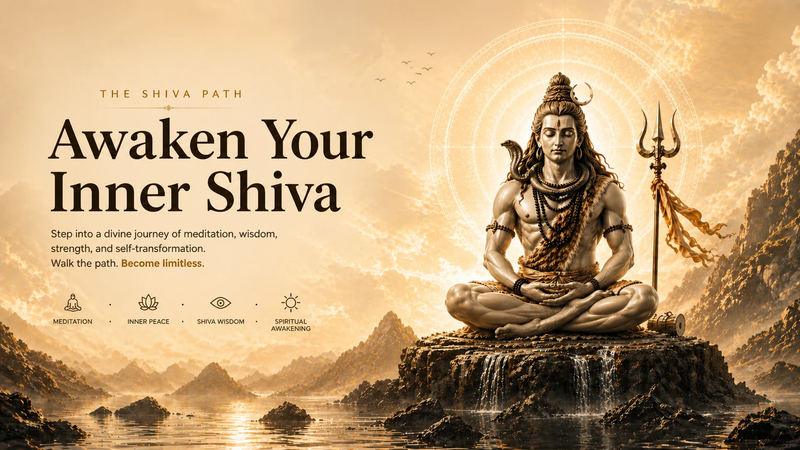
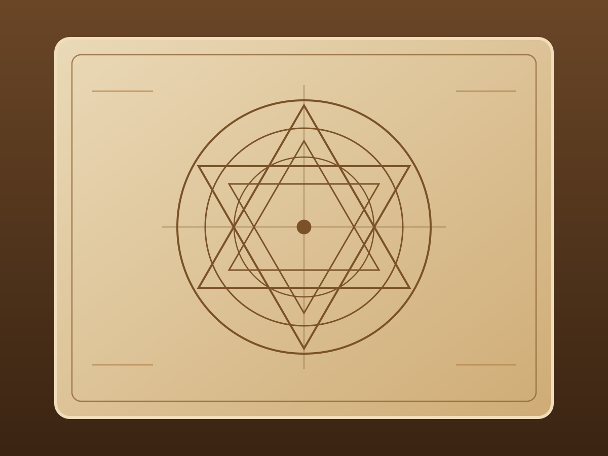
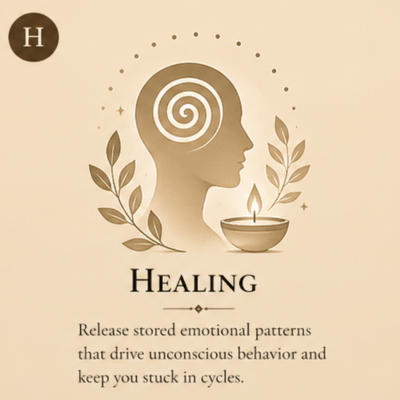
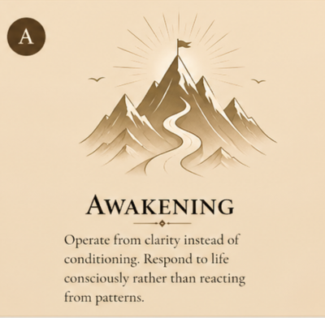
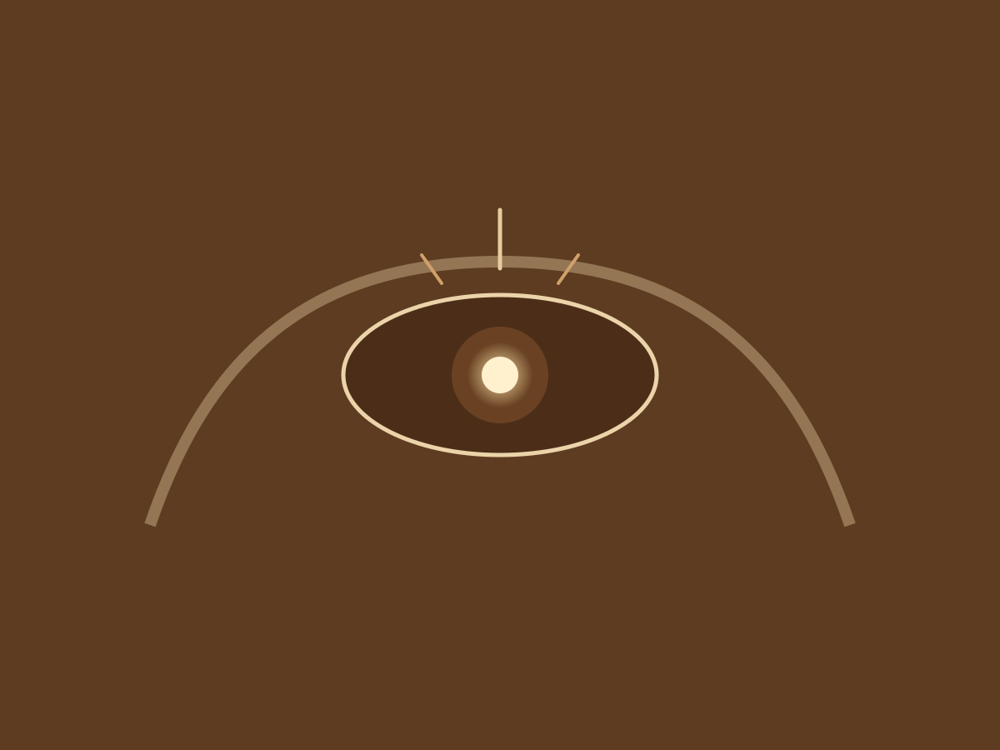
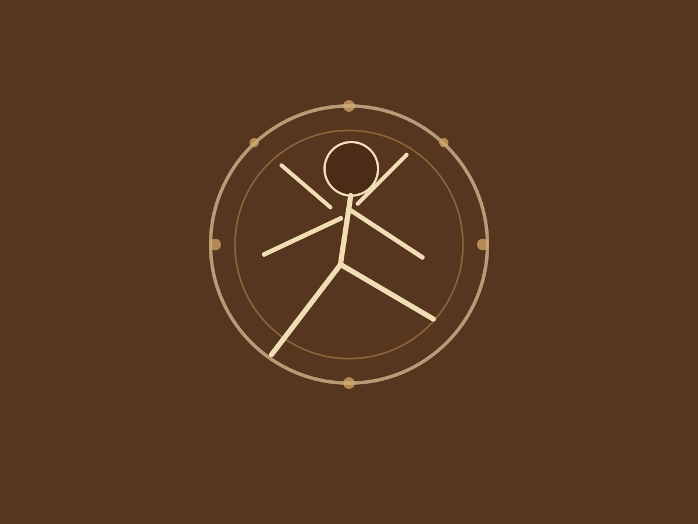
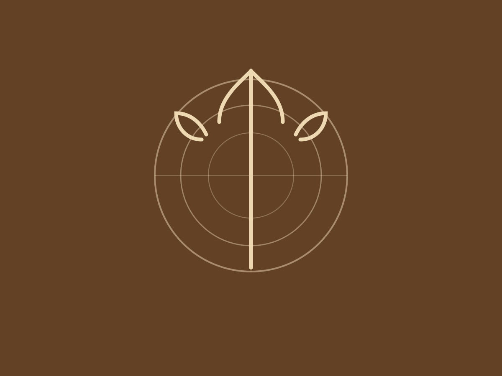

About the Founder
Vineet Nakhasi is the founder of The SHIVA Path — a transformative approach designed to bring individuals back to clarity, alignment, and inner stability.
This work did not come from theory. It emerged through a phase where identity broke, control dissolved, and certainty disappeared. What followed was not learning, but direct seeing. A deeper self-awareness formed through experience, stillness, and connection with Shiva.
Today, Vineet works with individuals who are ready to:
- Stop escaping themselves
- Face their patterns honestly
- Move from confusion to clarity
This is not motivational coaching. This is inner transformation at the root level.




Who This Is For
This path is for you if:
- You feel stuck in patterns you cannot break.
- You keep repeating the same life or relationship cycles.
- You carry emotional heaviness or unresolved experiences.
- You experience anxiety, confusion, or inner restlessness.
- You are seeking clarity, not distraction.
- You feel something deeper needs to shift.
This path requires honesty, openness, and willingness to see truth. It is not for those expecting motivation without inner work.
Your Transformation Journey
When you enter The SHIVA Path, this is what unfolds:
- Awareness — You begin to see patterns you were previously unconscious of.
- Breakdown of Illusion — False beliefs and identity layers start dissolving.
- Emotional Release — Stored reactions and triggers begin to clear.
- Inner Alignment — You experience stability and grounded clarity.
- Expansion — You start living differently — not reacting, but responding.
Your Offerings
Start with clarity. Go deeper when you're ready.
Choose Your Path
- SHIVA Clarity Session — ₹2,500 / $30 | Identify the exact pattern keeping you stuck
- SHIVA Deep Dive — ₹8,000 / $100 | Understand root cause, map triggers, introduction to Mahadev Kriya
- Relationship Realignment — ₹25,000 / $300 | Break repeating cycles, release emotional baggage
- The SHIVA Path (Full Program) — ₹35,000 / $450 | Full pattern mapping, weekly guided progression, long-term inner stability
What Clients Experience
Voices from The SHIVA Path

"I was troubled by my past for years. When I connected with Vineet ji, something shifted deeply within me. It felt as if Mahadev himself was guiding me through him. That day, I received answers to questions I had carried for years."

"I feel lighter, calmer, and closer to myself. There is a sense of protection and support I never felt before. Just speaking to you makes life easier. I am truly grateful."

"Through your guidance, I moved closer to Shiva. My anxiety reduced, my focus improved, and I feel more aligned. You don't just teach — you truly guide."
This is not about becoming something new.”
This is about returning to what you already are.
What Is The SHIVA Path
The SHIVA Path is a structured system designed to help you see clearly, break unconscious patterns, and realign your inner state. It works at the root of your thoughts, emotions, and behaviors — not just symptoms.
The SHIVA framework — Self-Awareness, Healing, Inner Alignment, Vibrational Shift, and Awakening — is not a philosophy to study. It is a path to walk. Each stage brings you closer to operating from clarity instead of conditioning.
What clients experience: immediate clarity in confusing situations, reduction in emotional overwhelm, better decision-making, improved relationship dynamics, and a deeper connection with self.
Begin Your Journey
Ready to begin? Reach out and take the first step toward clarity.